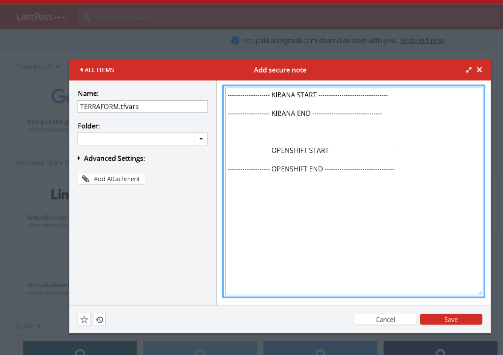

Why Storing terraform.tfvars in LastPass is a Smart Move

In the world of infrastructure as code (IaC), Terraform is one of the most popular tools used to manage and provision resources across various cloud platforms. While Terraform simplifies the infrastructure management process, it also comes with the responsibility of securely handling sensitive data, such as API keys, passwords, and other credentials, often stored in the terraform.tfvars file.
Given the sensitivity of this file, it’s crucial to ensure it is stored and accessed securely. One effective way to manage and protect your terraform.tfvars file is by storing it in a password manager like LastPass. Here’s why this is a smart move:
1. Enhanced Security
The terraform.tfvars file often contains critical secrets like API tokens, database passwords, and other sensitive configuration details. Storing this file in plain text on your local machine or in a version control system exposes it to potential security breaches. LastPass encrypts your data using AES-256 bit encryption, ensuring that your sensitive information is protected from unauthorized access.
2. Centralized Access Control
LastPass allows you to centralize access to the terraform.tfvars file. Instead of distributing the file across multiple team members or machines, you can store it in a shared LastPass vault. This ensures that only authorized personnel can access or modify the sensitive data, reducing the risk of accidental exposure.
3. Version Control
By storing your terraform.tfvars in LastPass, you can maintain version control over your secrets. This feature is particularly useful when you need to update or roll back changes to your infrastructure configuration. LastPass keeps a history of your entries, allowing you to recover previous versions if necessary.
4. Convenience and Automation
Integrating LastPass with your development workflow can streamline the process of accessing and updating the terraform.tfvars file. LastPass can be accessed via CLI or API, enabling you to automate the retrieval of secrets during your Terraform runs. This eliminates the need to manually manage secrets, reducing the chances of human error and ensuring that your automation pipelines are both secure and efficient.
5. Compliance and Auditing
For organizations subject to compliance regulations, LastPass provides auditing capabilities that track who accessed the terraform.tfvars file and when. This level of logging and reporting is essential for maintaining compliance with standards like GDPR, HIPAA, and SOC 2, where secure handling of sensitive information is mandatory.
6. Disaster Recovery
In the event of a disaster, such as a lost laptop or compromised credentials, LastPass offers a secure way to recover access to your terraform.tfvars file. The ability to securely share and revoke access means that your critical infrastructure secrets are not permanently lost or exposed during an emergency.
Conclusion
Storing your terraform.tfvars file in LastPass is a proactive step toward enhancing the security and manageability of your infrastructure secrets. With features like strong encryption, centralized access control, and integration with your workflow, LastPass provides a robust solution for managing sensitive Terraform configurations. By adopting this practice, you protect your infrastructure from potential security risks while ensuring that your team can work efficiently and securely.
Whether you are managing a small set of resources or a large-scale infrastructure, keeping your Terraform secrets safe should be a top priority, and LastPass is an excellent tool to help you achieve that goal.
Imported from rifaterdemsahin.com · 2025